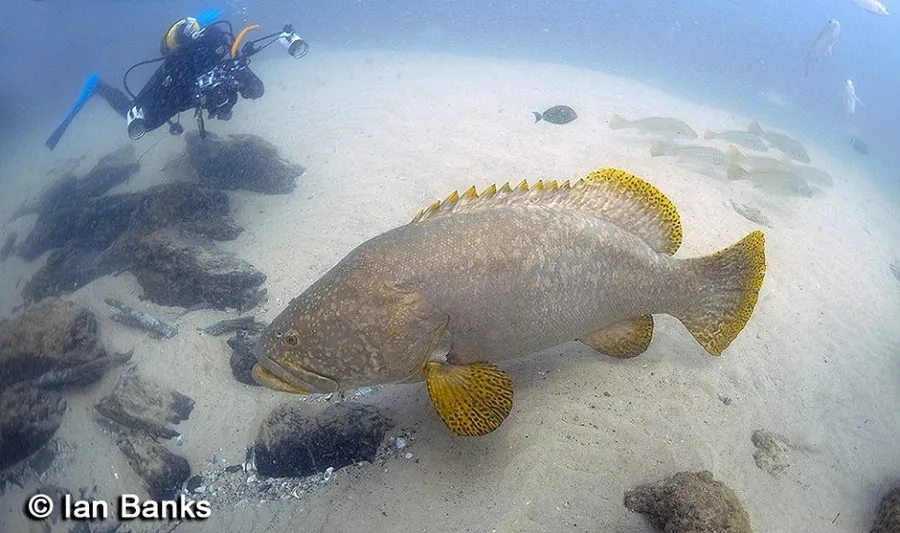

鱼类 · 动物界
龙胆石斑 Epinephelus lanceolatus

石斑鱼中体型最大的一种，成鱼可达 2 m 以上，体侧有黄褐色斑纹，是珊瑚礁顶级捕食者与名贵食用鱼。
- 分类
- 门脊索动物门纲辐鳍鱼纲目鲈形目科鮨科属石斑鱼属
- 栖息环境
- 珊瑚礁、岩礁和河口，幼鱼多在浅水，成鱼在较深水域
- 地理分布
- 印度洋—太平洋热带和亚热带海域，中国南海和台湾周边有分布
- 保护级别
- IUCN 易危（VU）；中国未列入国家重点保护野生动物名录
物种志
龙胆石斑体呈长椭圆形，头大，口大，体侧有黄褐、灰褐相间的斑纹，幼鱼身上有明显的黄色斑块，成鱼斑纹变淡。它是石斑鱼中体型最大的一种，成鱼体长一般 1–2 m，最大可达 2.7 m，体重可超过 400 kg。
龙胆石斑分布于印度洋—太平洋的热带和亚热带海域，从红海、东非到日本南部、澳大利亚，中国南海和台湾周边有分布。它栖息在珊瑚礁、岩礁和河口，幼鱼常出现在浅水，成鱼多在较深水域，捕食鱼类、甲壳类和头足类。龙胆石斑生长缓慢、性成熟晚，加上过度捕捞和活鱼贸易，野生种群下降，IUCN 将其列为易危。它是名贵的食用鱼，已开展人工养殖和杂交育种。
形态与习性
- 食性鱼类、甲壳类和头足类
- 体长一般 1–2 m，最大可达 2.7 m
- 体重最大可超过 400 kg
- 习性多单独活动，是珊瑚礁中的顶级捕食者
- 繁殖雌雄同体，先雌后雄，性成熟较晚
- 经济价值名贵食用鱼，已开展人工养殖和杂交育种
趣味知识
- 龙胆石斑是石斑鱼中体型最大的一种，最大个体可超过 400 kg。
- 它的幼鱼身上有明显的黄色斑块，长大后斑纹会变淡。
- 龙胆石斑是雌雄同体、先雌后雄的鱼类，性成熟较晚。
生态关系
- 共生 ← 太平洋清洁虾 清洁虾为石斑鱼清除寄生虫